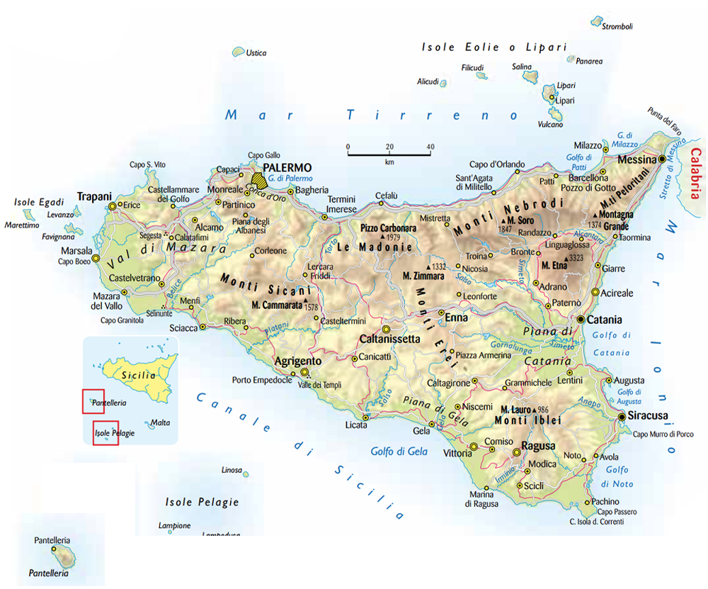
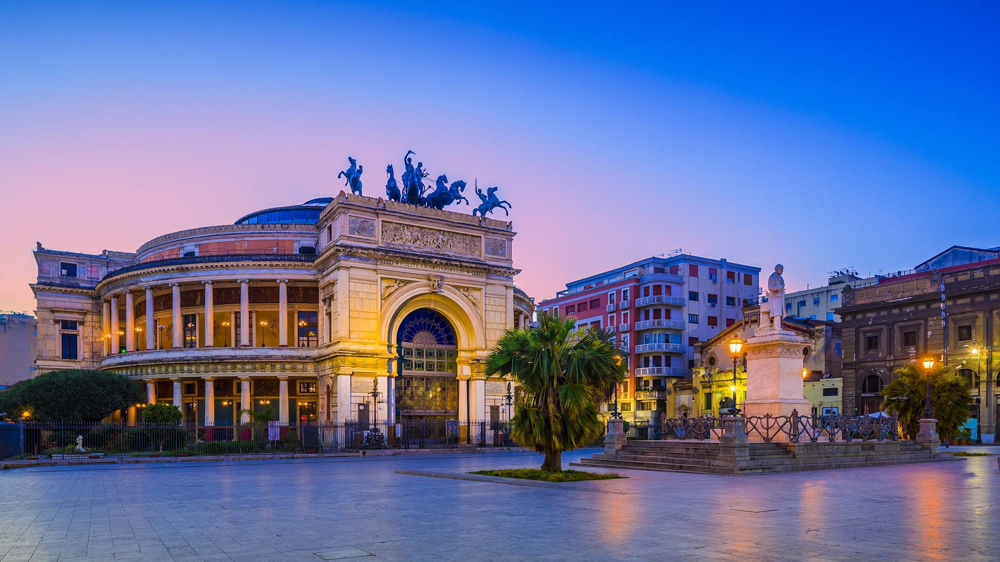
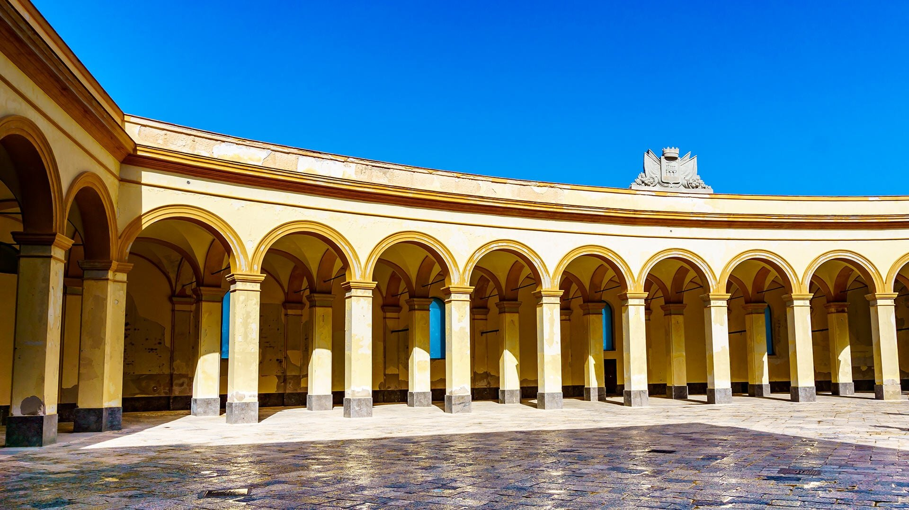

Il Cuore Pulsante dell'Isola
In Sicilia, la piazza non è mai stata un semplice spazio urbanistico o un punto di transito. È, fin dai tempi dei coloni greci, l'Agorà: il centro del mondo, il palcoscenico dove la vita pubblica, religiosa e sociale si intreccia in un abbraccio di pietra. Ogni basolato, ogni facciata barocca e ogni ombra proiettata dai campanili racconta una storia di dominazioni, di scambi culturali e di tradizioni che resistono al tempo.
Un Viaggio in 9 Tappe
Il progetto Agorà Sicana nasce per guidarti alla scoperta di questa identità mediterranea. Abbiamo selezionato 9 piazze iconiche, una per ogni provincia siciliana, per offrirti uno sguardo d'insieme sulla varietà paesaggistica e architettonica dell'isola. Dalle piazze che si affacciano prepotenti sul mare a quelle incastonate nell'entroterra montuoso, ogni tappa è un tassello di un mosaico millenario.
Le Grandi Protagoniste
Tra queste, abbiamo scelto di accendere un riflettore speciale su 4 piazze principali. Sono i grandi "salotti" della Sicilia, luoghi dove l'architettura raggiunge vette di bellezza assoluta e dove il respiro della storia è più forte che altrove. Per queste quattro tappe troverai approfondimenti esclusivi, dettagli architettonici e curiosità sulla vita che le anima dal mattino alla sera. Come esplorare il sito: Clicca sulle province evidenziate in basso per aprire le porte di queste meravigliose Agorà. Lasciati guidare dalla curiosità e scopri come la pietra siciliana sappia ancora parlare a chi sa ascoltarla.

PALERMO: Piazza Castelnuovo
Il Salotto della Capitale
Dominata dal maestoso arco trionfale del Teatro Politeama, questa piazza è il vero cuore pulsante della Palermo moderna. Un incrocio tra storia e mondanità, dove l'architettura neoclassica abbraccia il passeggio cittadino in un’atmosfera vibrante e senza tempo.

TRAPANI: Piazza Mercato del pesce
Il Respiro del Mare
Un tempo centro nevralgico degli scambi marittimi, questa piazza a esedra si affaccia direttamente sul blu. Con le sue arcate eleganti e la statua di Venere Anadiomene, racconta il legame indissolubile tra Trapani, il suo porto e le antiche tradizioni dei pescatori.

RAGUSA: Piazza Duomo
Il Barocco nel Cielo
Incastonata nel cuore di Ibla, è una delle piazze più scenografiche d’Italia. La facciata convessa del Duomo di San Giorgio svetta sopra una scalinata imponente, creando un gioco di prospettive che lascia senza fiato, specialmente quando la pietra dorata si accende al tramonto.

AGRIGENTO: Piazza Luigi Pirandello
Il Terrazzo sulla Storia
Conosciuta come Piazza Municipio, è il salotto civile della città. Incorniciata dal Palazzo di Città (ex convento dei Domenicani) e dal Teatro Pirandello, questa piazza è un ponte tra la città moderna e la Valle dei Templi, nel segno del grande scrittore agrigentino.